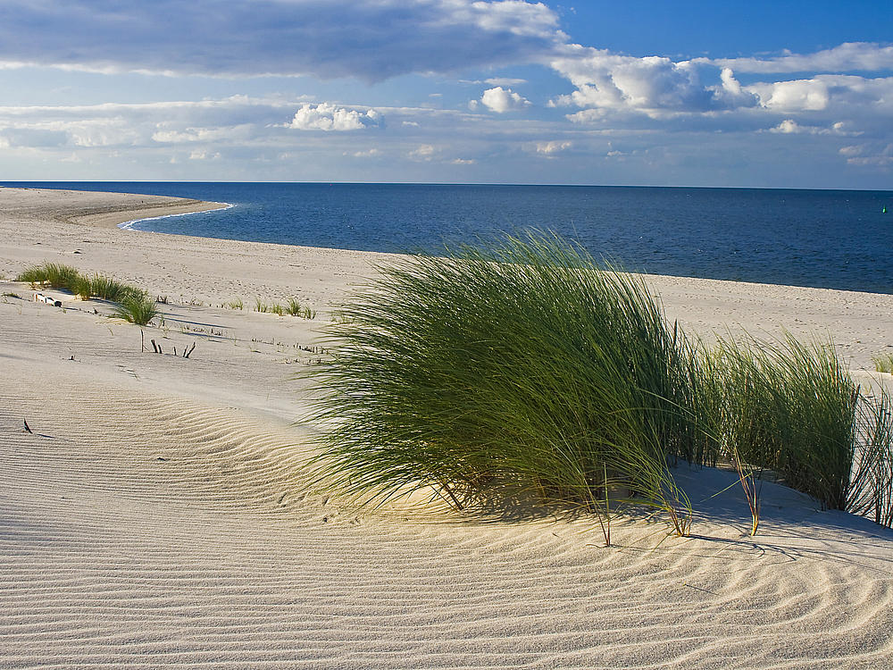

Die Insel Römö wird das erste Mal 1190 in einem Dokument erwähnt. Bis 1864 gehörte der Südteil der Insel zum Königreich Dänemark. Der Nordteil war Eigentum des Schleswigschen Herzogs.
Die Überreste einer Burganlage aus dem 14. Jahrhundert sind bei Österby zu finden.
In der Hochzeit der Seefahrt im 16. Jahrhundert übernahm Römö zum Teil die Funktion des Hochseehafens.
Durch den Walfang im 17. und 18. Jahrhundert gewann Römö an Reichtum.
Von 1864 bis 1920 gehörte Römö offiziell zu Schleswig-Holstein, ist aber inzwischen wieder ein Teil von Süddänemark.
